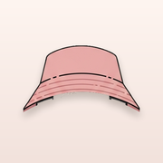

shenning
Shen's little world is wider that way. ✿
Rotate to landscape to play.

Play full-screen with no browser bars. In Safari:
On iOS 26 the Share button lives inside that menu, not on the bar. Easiest with your phone upright. ✿